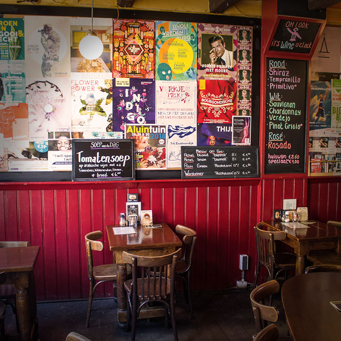
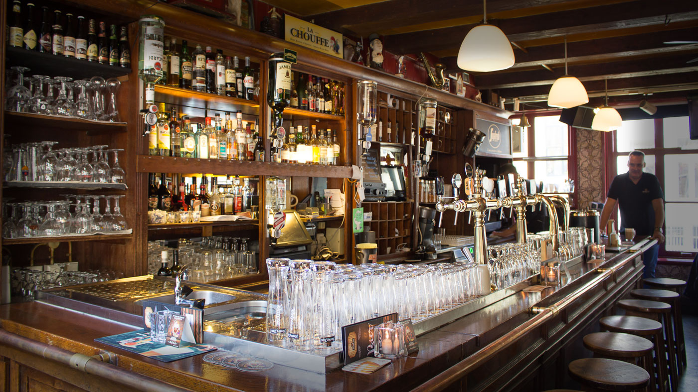
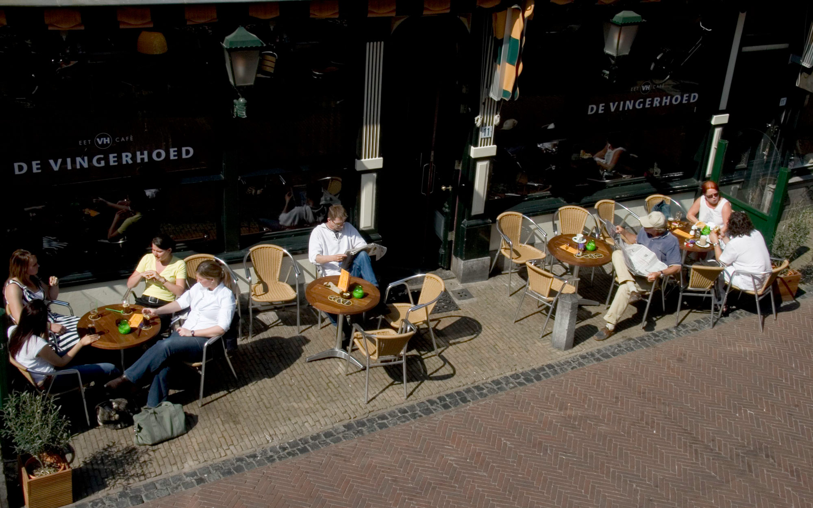
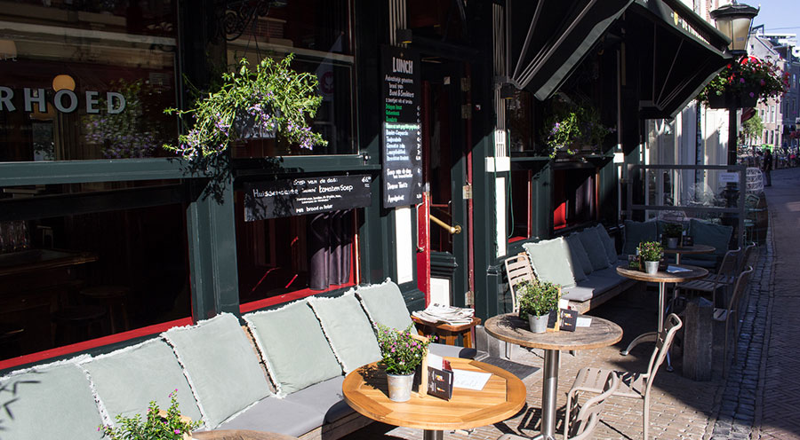
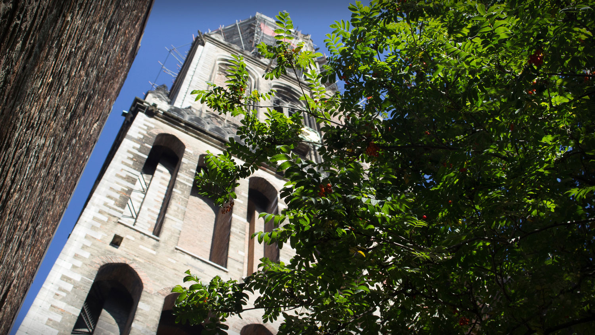

DE VINGERHOED
“Een écht bruin eetcafé in Utrecht”
Op een van de mooiste plekjes van de stad, tussen het Wed en de Oude Gracht. Royaal belegde broodjes, een goed glas wijn of een speciaal biertje.
Donkere Gaard 11, Utrecht

Een bruin café met een lange geschiedenis
De Vingerhoed dankt zijn naam aan de shirtmaker die tot het begin van de twintigste eeuw in dit monumentale pand zat. De lange toonbank, die nu dienst doet als bar, herinnert nog aan die tijd.
Aan de achterkant kijkt het pand uit op de Oude Gracht. Aan de voorkant zit je op het verwarmde terras midden in de gezellige drukte op het Wed. Al jaren bekend om de gezellige sfeer en de royaal gevulde borden, en een plek waar iedereen zich meteen thuis voelt.

Lunch & borrel
Van een broodje kroket rond het middaguur tot bitterballen bij het eerste biertje.
Ambachtelijk gebakken brood van Bond en Smolders 2 sneetjes wit of bruin brood met gemengde salade
Broodjes
Utrechtse kroketten
Soep, tosti’s & gebak
Borrelen in De Vingerhoed Bittergarnituur hoef je niet vooraf door te geven, er is genoeg in huis.
Om te delen
Uit de frituur
Borrelen met een groep
Met vrienden of collega’s na het werk? Met een kleine groep kun je altijd binnenlopen. Kom je met meer mensen, stuur dan even een mail, dan weten we dat je eraan komt.
Mail over je groep- tot 10
Kan altijd. Gewoon langskomen.
- 10 tot 25
Borrelen aan de bar. Een aparte ruimte is er niet, dus stuur ons vooraf een mail.
- meer dan 25
Daar hebben we helaas geen ruimte voor.

Aan de voorkant: het Wed
Op het verwarmde terras kijk je uit op de gezellige drukte van het Wed. Onder de nieuwe luifels zit je ook droog als het even tegenzit.


Kom langs
Openingstijden
| Dinsdag t/m zaterdag | 9.30 – 1.00 |
| Zondag | 12.00 – 19.00 |
Adres & contact
Eetcafé De VingerhoedDonkere Gaard 11
3511 KV Utrecht
Nieuwe taps en het laatste nieuws: @eetcafedevingerhoed op Instagram.